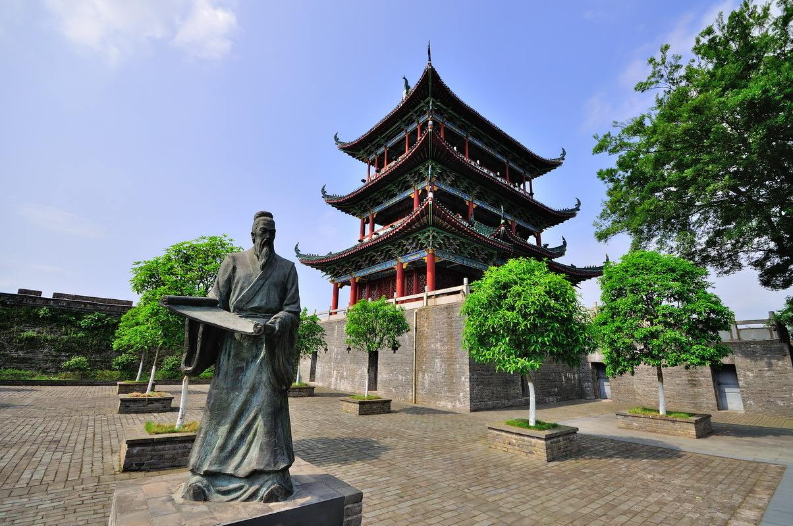
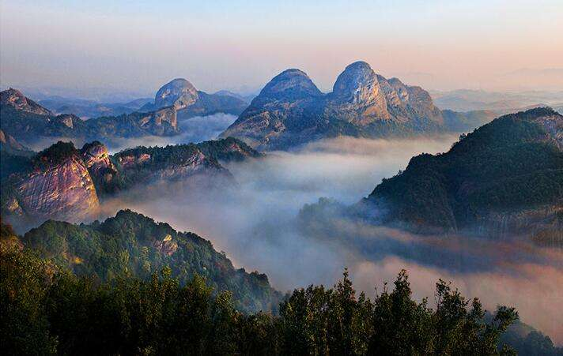
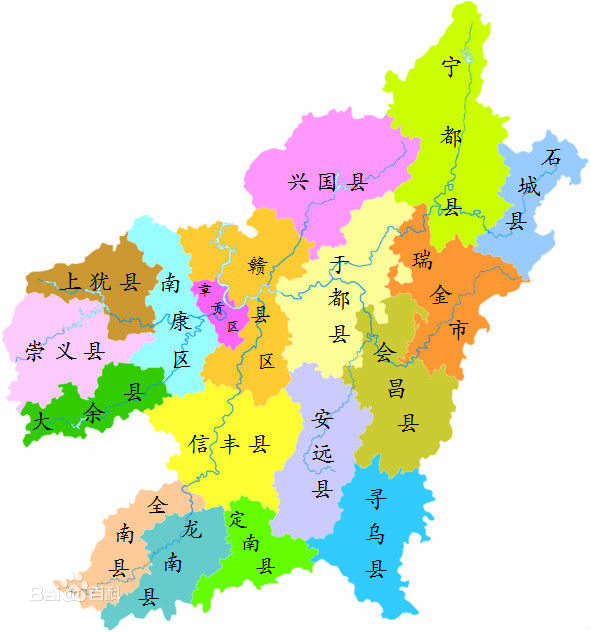

赣州简介

赣州，简称“虔”，别称“虔城”，也称“赣南”，是江西省的南大门，是江西省面积最大、人口最多的设区市。 赣州地处亚热带季风气候区，地形以山地、丘陵、盆地为主，总面积39379.64平方千米，下辖3个市辖区、14个县、 1个县级市、2个功能区，2017年户籍总人口为974.25万人。赣州是江西省省域副中心城市、中国百强城市、 国家区域中心城市、国家Ⅱ型大城市、全国性综合交通枢纽、“一带一路”重要节点城市、赣粤闽湘四省通衢的区域性 现代化中心城市，拥有4个国家级开发区和1个综合保税区。赣州钨与稀土资源丰富，是全国稀有金属产业基地和先进 制造业基地。赣州是原中央苏区振兴发展示范区、红色文化传承创新区和著名的红色旅游目的地。赣州都市区是江西 省重点培育和发展的都市区。赣州是国家历史文化名城、全国文明城市、国家森林城市、国家园林城市、中国优秀旅 游城市、全国双拥模范城市、原中央苏区所在地、万里长征的起点城市，文天祥、周敦颐、海瑞、王守仁、辛弃疾和 中共第一代核心领导人皆在赣州主政过。赣州是中国魅力城市之一，有着千里赣江第一城、江南宋城、红色故都、客 家摇篮、世界橙乡、世界钨都、稀土王国和世界风水堪舆文化发源地等美誉。2012年，国务院正式出台《国务院关于 支持赣南等原中央苏区振兴发展的若干意见》，赣南苏区振兴发展上升为国家战略。2013年，赣州成为中部首个执行西 部大开发税收政策的城市。2017年，赣州获批成为江西省首个“中国制造2025”试点示范城市。
气候概述

赣州市地处中亚热带南缘属亚热带季风气候区，具有冬夏季风盛行、春夏降水集中、四季分明、气候温和、 热量丰富、雨量充沛、酷暑和严寒流时间短、无霜期长等气候特征。赣州市总降水量平均为1318.9毫米， 比历年同期少1.8成，属偏少年份（其中上犹、大余、兴国为正常年份，全南为特少年份，其他县市为偏少年份）。 以大余1554.9毫米为最多，龙南1152.2毫米最少。赣州市年平均气温为19.8℃，比历年同期高0.9℃，各县市年平均 气温在19.1~20.8℃之间。赣州市年平均气温以于都20.8℃为最高，石城19.1℃最低；章贡区为20.2℃。
行政区划

赣州市下辖章贡区、南康区、赣县区3个市辖区，大余、上犹、崇义、信丰、龙南、定南、全南、安远、宁都、于都、 兴国、会昌、石城、寻乌14个县，代管瑞金1个县级市，赣州经济技术开发区、蓉江新区2个功能区。全市共有7个街道办事处， 142镇，141乡（含民族乡1个），5个管理区，10个营林林场，422个居民委员会，3461个村民委员会。章贡区、南康区、赣县区、 赣州经济技术开发区、蓉江新区共同组成赣州市中心城区。
经济概况
2017年，赣州市地区生产总值（GDP）2524.01亿元，比上年增长9.5%。其中，第一产业增加值345.22亿元，增长4.8%； 第二产业增加值1066.65亿元，增长8.5%；第三产业增加值1112.14亿元，增长12.3%。三次产业结构由2016年的15.2∶41.6∶43.2 调整至2017年的13.7∶42.2∶44.1。全年人均地区生产总值29308元，比上年增长8.9%。非公有制经济实现增加值1522.62 亿元， 增长9.7%，占GDP比重为60.3%。
2017年，赣州市财政总收入408.32亿元，比上年增长11.5%。其中，一般公共预算收入245.36亿元，增长0.9%。财政总收入占GDP的 比重达16.2%，下降0.4个百分点。全年各项税收收入329.88亿元，增长14.5%。一般公共预算支出776.44亿元，增长14.7%。其中， 民生类支出648.19亿元，增长17.3%，占一般公共预算支出的比重达83.5%，比上年提高1.9个百分点。
2017年，赣州市固定资产投资2510.48亿元，增长13.8%，其中工业投资1043.02亿元，增长29.0%。分产业投资看，第一产业投资 56.05亿元，比上年增长43.6%；第二产业投资1042.22亿元，增长28.9%；第三产业投资1412.21亿元，增长4.0%。分企业类型看， 国有企业投资797.00亿元，增长26.4%；有限责任公司投资843.31亿元，下降0.7%；股份有限公司投资25.90亿元，下降41.6%； 私营企业投资722.28亿元，增长25.0%；港澳台商企业投资43.25亿元，下降12.5%；外商投资20.04亿元, 下降21.6%； 个体经营投资1.35亿元，下降59.6%。